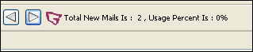
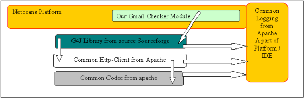
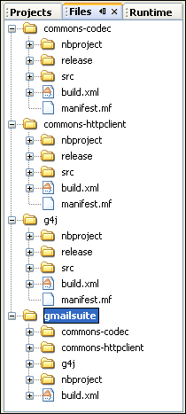
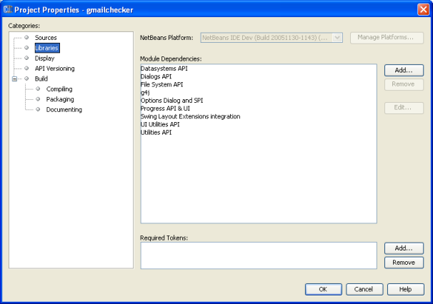
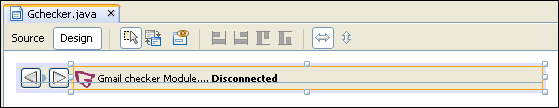
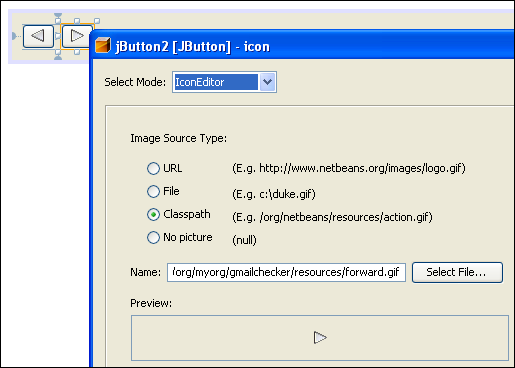
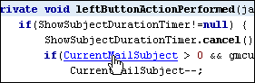

Apache NetBeans
Apache NetBeansLatest release
NetBeans Gmail Checker Module Tutorial
| This tutorial needs a review. You can edit it in GitHub following these contribution guidelines. |
This tutorial shows you how to embed a Gmail Checker in the IDE. The Gmail Checker The connection is made via settings that you specify in the IDE’s Options window. Once the IDE has established contact with a Gmail account, it displays the number of newly received e-mails and the percentage of the mailbox that is in use. Then it displays the subject lines of the new e-mails in the toolbar, one at a time, as shown below:

You use the two arrow buttons to rotate sequentially between the headers of the newly received e-mails.
The IDE’s Options window plays a central role in the Gmail Checker module. In this tutorial, you add a new panel to the Options window, as shown below:

The new panel lets you specify settings such as the Gmail account name, password, proxy address, port number, duration of automatic checks performed by the module, duration that the rotation buttons stop between headers, and whether a sound is made when e-mails are received or headers are rotated.
The following topics are covered in this tutorial:
Once the software is installed, this tutorial can be completed in 60 minutes.
For more information on creating NetBeans plug-in modules, see the NetBeans Development Project home on the NetBeans website. If you have questions, visit the NetBeans Developer FAQ or use the feedback link at the top of this page.
Getting to Know the Sample
Before you start writing the module, you have to make sure you have all of the necessary software. In addition, you might want to play with the sample before building it yourself.
Installing the Software
Before you begin, you need to install the following software on your computer:
Installing the Sample
Take the following steps to install the sample:
-
Unzip the attached file.
-
In the IDE, choose File > Open Project and browse to the folder that contains the unzipped file. Open the five module projects. They should look as follows:

-
Right-click the project node and choose Install/Reload in Target Platform. The target platform opens and the module is installed.
Introducing the Sample
-
Choose Tools > Options. In the Options window, click Gmail Checker in the left sidebar.
-
Set your preferences and then click OK.
When you exit the Options window, you are prompted to let the module save your changed settings.
-
In the IDE’s toolbar, click on the "No Active Connection or Connection Is Not Usable" text:

The text changes to "Connecting to Gmail":

And a progress bar appears in the bottom right hand corner of the IDE:
If the connection fails, the text reverts to "No Active Connection or Connection Is Not Usable". If this happens, go back to the Options window and correct your settings. For example, if you are behind a corporate firewall, set a proxy host and proxy port number in the Gmail Checker panel.
-
When the Gmail Checker module successfully accesses Gmail, the text in the toolbar quickly displays the percentage of the e-mail account that is in use, together with the number of new e-mails:

Then the text in the toolbar changes to show the subject line of the first unread e-mail found in the account’s inbox. Use the left and right buttons to scroll from subject line to subject line:

If you enabled sounds in the Options window, you hear a small sound whenever you scroll from one header to another and also whenever a new e-mail appears in the e-mail account.
Now that you know what the user interface of the Gmail Checker plug-in module looks like, let’s create the module from scratch.
Setting Up the Module Project
Before you start writing the module, you have to make sure you that your project is set up correctly.
Providing Access to the NetBeans IDE Sources
When you make the IDE’s sources available to the NetBeans Platform Manager, you can access the IDE’s source files and Javadoc from the Source Editor. This simplifies plug-in module development, because it enables you to very quickly find out information about the classes and methods that you are implementing.
-
If you have not already done so, download the sources here.
-
Choose Tools > NetBeans Platform Manager.
-
In the Sources tab, click Add ZIP/Folder, and browse to the ZIP file that contains the NetBeans IDE sources, as shown below:

-
Click Close.
Creating the Module Suite Project
Module suite projects enable you to deploy multiple modules in one unit. In this tutorial, you create a collection of modules—the gmailchecker module that provides the user interface and connection to Gmail accounts, the g4j module that provides the APIs for communicating with Gmail, the commons-httpclient module that provides HTTP functionality, and the commons-codec module that provides implementations of common encoders and decoders. This is how the modules interact with each other and with the NetBeans platform:

Do the following to create the module suite project:
-
Choose File > New Project. Under Categories, select NetBeans Plug-in Modules. Under projects, select Module Suite Project and click Next.
-
In the Name and Location panel, type
gmailsuitein Project Name. Change the Project Location to any directory on your computer, such asc:\mymodules. Leave the Set as Main Project checkbox selected. Click Finish.
The new module suite project opens in the IDE. It contains one node in the Project window. This node, the Modules node, is for manually adding module projects to the module suite project. When you use the Module Project wizard or the Library Wrapper Module Project wizard, the module that you create can automatically be added to the module suite project.
Creating the Library Wrapper Module Projects
Modules that use an external library use a wrapper module to make classes from that library available at runtime. A wrapper module is a module that acts as a proxy to turn a library into a NetBeans module. This is the way you let your code use third party libraries. It serves the same function that running with java -cp or setting CLASS_PATH would do in a smaller Java application.
For each of the three libraries in the module collection, that is, commons-code.jar , commons-httpclient.jar , and g4j.jar , repeat the steps below. You downloaded the three libraries as part of the Gmail Checker Archive at the start of this tutorial. At the end of this subsection, you should have three library wrapper module projects.
-
Choose File > New Project. Under Categories, select NetBeans Plug-in Modules. Under projects, select Library Wrapper Module Project and click Next.
-
In the Name and Location panel, browse to the library JAR file in Library.
-
Leave the License text field empty. If you intend to distribute the completed product, you should include the external library’s license file.
-
Click Next, click Next again, and then click Finish.
In the Files window, you should now see the following:

-
The library wrapper module projects depend on each other. For each project, right-click the project node, choose Properties, and then click Libraries in the Project Properties dialog box. Click Add in the upper part of the dialog box and add module dependencies as follows:
| Module | Dependency |
|---|---|
|
|
|
|
|
|
-
For each project, expand the Important Files node in the Projects window, double-click the Project Metadata node, and note that the APIs you selected have been declared as module dependencies.
Creating the Module Project
Now you need a module project, to contain the actual code you’re going to write.
-
Choose File > New Project. Under Categories, select NetBeans Plug-in Modules. Under projects, select Module Project and click Next.
-
In the Name and Location panel, type
gmailcheckerin Project Name. Change the Project Location to any directory on your computer, such asc:\mymodules. Leave the Add to Modulde Suite radio button selected and select the Set as Main Project checkbox. Click Next.
-
In the Basic Module Configuration panel, change
yourorgherein Code Name Base toorg.myorgso that the whole name isorg.myorg.gmailchecker. Leavegmailcheckeras the Module Display Name. Leave the location of the localizing bundle and XML layer, so that they will be stored in a package with the nameorg.myorg.gmailchecker. Click Finish.
The IDE creates the gmailchecker project. The project contains all of your sources and project metadata, such as the project’s Ant build script. The project opens in the IDE. You can view its logical structure in the Projects window (Ctrl-1) and its file structure in the Files window (Ctrl-2).
You will need to subclass several classes that belong to NetBeans APIs. Each has to be declared as a module dependency. Just as you did for the library wrapper module projects, use the Project Properties dialog box for this purpose, as described in the next steps.
-
In the Projects window, right-click the
gmailcheckerproject node and choose Properties. In the Project Properties dialog box, click Libraries.
-
For each of the following APIs, click "Add…", select the name from the Module list, and then click OK to confirm it:

-
Click OK to exit the Project Properties dialog box.
-
In the Projects window, expand the Important Files node, double-click the Project Metadata node, and note that the APIs you selected have been declared as Module dependencies:
<?xml version="1.0" encoding="UTF-8"?>
<project xmlns="https://netbeans.org/ns/project/1">
<type>org.netbeans.modules.apisupport.project</type>
<configuration>
<data xmlns="https://netbeans.org/ns/nb-module-project/2">
<code-name-base>org.myorg.gmailchecker</code-name-base>
<suite-component/>
<module-dependencies>
<dependency>
<code-name-base>org.jdesktop.layout</code-name-base>
<build-prerequisite/>
<compile-dependency/>
<run-dependency>
<release-version>1</release-version>
<specification-version>1.3</specification-version>
</run-dependency>
</dependency>
<dependency>
<code-name-base>org.netbeans.api.progress</code-name-base>
<build-prerequisite/>
<compile-dependency/>
<run-dependency>
<release-version>1</release-version>
<specification-version>1.4</specification-version>
</run-dependency>
</dependency>
<dependency>
<code-name-base>org.netbeans.modules.options.api</code-name-base>
<build-prerequisite/>
<compile-dependency/>
<run-dependency>
<release-version>0</release-version>
<specification-version>1.2</specification-version>
</run-dependency>
</dependency>
<dependency>
<code-name-base>org.openide.awt</code-name-base>
<build-prerequisite/>
<compile-dependency/>
<run-dependency>
<specification-version>6.7</specification-version>
</run-dependency>
</dependency>
<dependency>
<code-name-base>org.openide.dialogs</code-name-base>
<build-prerequisite/>
<compile-dependency/>
<run-dependency>
<specification-version>6.4</specification-version>
</run-dependency>
</dependency>
<dependency>
<code-name-base>org.openide.filesystems</code-name-base>
<build-prerequisite/>
<compile-dependency/>
<run-dependency>
<specification-version>6.4</specification-version>
</run-dependency>
</dependency>
<dependency>
<code-name-base>org.openide.loaders</code-name-base>
<build-prerequisite/>
<compile-dependency/>
<run-dependency>
<specification-version>5.9</specification-version>
</run-dependency>
</dependency>
<dependency>
<code-name-base>org.openide.util</code-name-base>
<build-prerequisite/>
<compile-dependency/>
<run-dependency>
<specification-version>6.7</specification-version>
</run-dependency>
</dependency>
<dependency>
<code-name-base>siuying.gm</code-name-base>
<build-prerequisite/>
<compile-dependency/>
<run-dependency>
<specification-version>1.0</specification-version>
</run-dependency>
</dependency>
</module-dependencies>
<public-packages/>
</data>
</configuration>
</project>Creating the Helper Classes
In this section, you create four helper classes. These classes provide utility methods, such as getters and setters. They are all housed in the org.myorg.gmailchecker.common package.
| File | Description | Used By |
|---|---|---|
|
Retrieves a Gmail account’s usage percentage and number of new e-mails. |
|
|
Provides serializable settings that the user defines in the Options window. |
|
|
Saves and restores the settings defined in the Options window. |
|
|
Connects to Gmail and retrieves each new e-mail’s subject line, count, and usage percentage. |
|
Below, you are told how to create the files. In each case, a link is provided to the source code.
GmailCountUsage.java
-
Create the file. Right-click the
org.myorg.gmailcheckerpackage node, choose New > Java Class, and typeGmailCountUsagein Class Name. Change the Package name toorg.myorg.gmailchecker.common. Click Finish. The new Java class opens in the Source Editor. Replace the default code with code found here.
-
Understand the file. This Java class is responsible for providing access to the usage percentage of the e-mail account and the number of new e-mails in the account. Getters and setters are provided for each of the properties:
-
newMailCount
-
usage
-
GCheckSetting.java
-
Create the file. Right-click the
org.myorg.gmailchecker.commonpackage node, choose New > Java Class, and typeGCheckSettingin Class Name. Click Finish. The new Java class opens in the Source Editor. Replace the default code with code found here.
-
Understand the file. This Java class is responsible for providing access to all the settings that the user can define in the Options window. Getters and setters are provided for each of the properties:
-
userName
-
password
-
proxy
-
useProxy
-
checkMailPriod
-
delayBetweenDiplay
-
delayBeforeStartCheck
-
port
-
voiceOn
-
showUnreadMails
-
GSettingUtil.java
-
Create the file. Right-click the
org.myorg.gmailchecker.commonpackage node, choose New > Java Class, and typeGSettingUtilin Class Name. Click Finish. The new Java class opens in the Source Editor. Replace the default code with code found here.
-
Understand the file. This Java class is responsible for saving and retrieving options that the user sets in the Options window. In this tutorial, you store settings in an external file. Note that a more typical NetBeans approach is to use the NetBeans Options Settings API.These are the methods used in this class:
public GSettingUtil() {
folderObject= Repository.getDefault().getDefaultFileSystem().getRoot().getFileObject("Settings");
if (folderObject==null){
try {
folderObject=Repository.getDefault().getDefaultFileSystem().getRoot().createFolder("Settings");
storeSetting(gsetting);
} catch (IOException ex) {
ex.printStackTrace();
// TODO file can not be created , do something about it
}
}
}
public boolean storeSetting(GCheckSetting settings){
try {
if (folderObject.getFileObject("Gcheck","Cfg")==null){
settingFile= folderObject.createData("Gcheck","Cfg");
}
settingFile= folderObject.getFileObject("Gcheck","Cfg") ;
lock = settingFile.lock();
ObjectOutputStream objectOutStr = new ObjectOutputStream(settingFile.getOutputStream(lock));
objectOutStr.writeObject(settings);
objectOutStr.close();
lock.releaseLock();
} catch (IOException ex) {
// TODO file can not be created , do something about it
ex.printStackTrace();
return false;
}
return true;
}
public GCheckSetting retrieveSetting(){
settingFile= folderObject.getFileObject("Gcheck","Cfg");
try {
ObjectInputStream objectInStr = new ObjectInputStream(settingFile.getInputStream());
gsetting = (GCheckSetting) objectInStr.readObject();
objectInStr.close();
} catch (IOException ex) {
ex.printStackTrace();
return null;
} catch (ClassNotFoundException ex) {
ex.printStackTrace();
return null;
}
return gsetting;
}The Constructor checks to see that the Settings folder is present. If it is not present, the Constructor creates the folder. The Constructor stores the settings in the newly created folder, which prevents subsequent retrieve and save calls from raising an NPE exception. The storeSetting() method stores the parameters that are passed to it. This method is used from the Options window. The storeSetting() method checks whether the Gcheck.Cfg file exists or not. If the file does not exist, the method creates it. If the file exists, the method tries to initialize a FileObject for it. Next, a lock is placed on the file, to make sure that the method has exclusive access. An output stream is then initiated for the file. This enables the object to be written to the file. Finally, the output stream is closed and the lock is released.
The retrieveSetting() method returns a GCheckSetting object. This object is leveraged by the user interface. The method creates a FileObject on GCheck.cfg , initiates an input stream, and reads the settings into the GCheckSetting object.
GmailHelper.java
-
Create the file. Right-click the
org.myorg.gmailchecker.commonpackage node, choose New > Java Class, and typeGSettingUtilin Class Name. Click Finish. The new Java class opens in the Source Editor. Replace the default code with code found here.
-
Understand the file. This Java class is responsible for making a connection to Gmail. The methods
connect(),getCountUsage(), andgetMailsInfo()do most of the work here:
public boolean connect(){
if (!proxyHost.equalsIgnoreCase("No Proxy"))
connector.setProxy(proxyHost,port) ;
return connector.connect();
}
public GmailCountUsage getCountUsage(){
int totalnewMessage = 0;
int percent=0;
boolean problematic=false;
if (connector.isConnected()) {
try {
res=connector.request(GMConstants.GM_REQ_STANDARD,"Inbox","");
} catch (IOException ex) {
ex.printStackTrace();
problematic=true;
} catch (ParsePacketException ex) {
problematic=true;
ex.printStackTrace();
} catch(NullPointerException npe){
npe.printStackTrace();
}
totalnewMessage =Integer.parseInt( (String) res.getGminfo().get("stdbox.inbox") );
percent= Integer.parseInt( ( (String) res.getGminfo().get("quota.percent")).replaceAll("%", ""));
return new GmailCountUsage(totalnewMessage,percent,false);
} else return new GmailCountUsage(-1,-1,true);
}
public ArrayList getMailsInfo(){
return res.getGMThreads();
}The connect() method initiates the GMConnector object. The getCountUsage() method retrieves the total count of the new e-mails received. It also retrieves the total usage percentage of the mailbox. The getMailsInfo() method returns an ArryList . The list contains all the new e-mail headers. Each header is stored in an object of type GMThread. This object holds information about the e-mails. The ArryList is used to retrieve the subjects of the new e-mails and to display them to the user.
Creating the Toolbar
The Gmail Checker toolbar is implemented in the same was as the Google toolbar described in NetBeans Google Toolbar Module Tutorial—first, you create an action that is registered in the IDE as a toolbar. Then, you override the action’s getToolbarPresenter() method so that the JPanel that defines the Gmail Checker is presented in the toolbar, instead of an icon. The toolbar is responsible for the following:
-
Retrieving the settings from the setting file, using
GCheckUtil.java. -
Connecting to Gmail, using
GmailHelper. It should do this periodically. The length of the pause between checks is stored in the settings file. -
Waiting for a few seconds before starting the first, post start-up, e-mail check.
-
Showing the total number of new e-mails and usage percentage to the user.
-
Rotating the subjects in the toolbar. It should be able to do this automatically, based on the period of time specified in the settings file. It should also be able to do this manually, when the user clicks the left or right button.
-
Playing a sound, based on settings that are stored in the setting file, if new e-mails are found in the e-mail account and if the user rotates between subjects by using the left and right buttons.
You can choose to follow the instructions below, or you can replace the default code with code found here. If you copy the content from the link, it is still a good idea to read the code described below, so that you understand how things work and so that you know where problems might be occurring if you need to debug.
Designing the Gmail Checker
-
Create the file. Right-click the
org.myorg.gmailcheckerpackage node, choose New > File/Folder, and then select JPanel Form from the Java GUI Forms category. TypeGcheckerin Class Name. Change the package name toorg.myorg.gmailchecker.gui. Click Finish. The new Java class opens in the Source Editor.
-
Understand the file. This Java class is responsible for interaction with the user. The methods are discussed in the following subsections.
-
Resize the JPanel and add user interface components. When you design the toolbar, you use the NetBeans IDE 5.x GUI Builder (also known as Matisse). In NetBeans IDE 5.x, the IDE’s GUI Builder is revamped to make it more powerful and intuitive, allowing you to build professional-looking GUIs without having an intimate understanding of layout managers. The IDE’s GUI Builder eliminates the difficulties of building GUIs, enabling you to lay out your forms by simply drag-and-dropping components where you want them. The GUI Builder is introduced in the GUI Building in NetBeans IDE tutorial.
The end product of this stage of the module-building process is that you should have a JPanel that looks similar to the following:

The icons in the illustration above are from the Gmail Checker Archive that you downloaded at the start of this tutorial. In your filesystem, move the resources folder that you find in the Gmail Checker Archive into the org.myorg.gmailchecker package.
It is important that the components that you define in the toolbar have the following names:
-
leftButton -
rightButton -
displayText
For the JLabel , define the text property, as follows:

By using HTML tags, you can very easily format the display text of a component in your application. In this case, this is the content of the text property:
<html>Gmail checker Module.... <b>Disconnected</b></html>For the icon property of each component, set the image source type to Classpath, as follows:

-
Declare the variables and constants. Declare the following at the top of the class:
//<editor-fold defaultstate="collapsed" desc="variables-consts">
ArrayList eMailsInformation = null;
GmailCountUsage gmcu=null;
GmailHelper gmHelper=null;
GCheckSetting settings =null;
GSettingUtil settingUtil=null;
org.openide.util.RequestProcessor.Task tskGm = null;
int CurrentMailSubject=0;
Timer mailcheckerTimer;//= new java.util.Timer();
Timer ShowSubjectDurationTimer; //= new java.util.Timer();
boolean checkIsUnderGo=false;
private String Connecting_to="<html><b>Connecting To Gmail...</b></html>";
private String Retrieving_user_count_info="<html><b>Retrieving Usage and Count Information...</b></html>";
private String usagePercent = "Usage Percent Is : ";
private String newMailsCount = "Total New Mails Is : ";
private String No_active_connection="<html><b>No Active Connection or Connection Is Not Usable...</b></html>";
private String InitiateString ="<html>Gmail checker Module.... <b>Disconnected</b></HTML>";
private String ModuletooltipString="Gmail Checker Module.....";
private String Retrieving_emails_info="<html><b>Retrieving e-mail Headers...</b></html>";
//</editor-fold>Checking for E-Mail
The Gmail Checker module provides a variety of ways in which e-mail checks are performed. When the IDE first starts up, a timer is started. When the period of time that the user previously specified in the Options window has passed, the first automatic e-mail check is performed. The timing of subsequent automatic e-mail checks can also be specified in the Options window. In addition, the user uses the left button and right button to manually force the IDE to perform an e-mail check.
-
The
DoCheckMail()method makes the connection to Gmail. It retrieves information about new e-mails and their subject lines. This method uses the toolbar label to show what the Gmail Checker module is doing and it uses the Progress API to display the progress of the job in the IDE’s progress bar.
The method defines 3 runnables. Each runnable calls one of the methods in the org.myorg.gmailchecker.common.GmailHelper class:
-
connectRun()callsconnect(). -
CheckUsageCount()callsgetCountUsage(). -
GetHeader()callsgetMailsInfo().
Since the Progress API is used to show the progress of the Gmail Checker’s tasks in the IDE’s progress bar, you need to comply with the requirements of the API. This API requires that the tasks be runnables. In each runnable, some of the class’s variables are set and in a later runnable, the variables are used to continue the task.
Add the DoCheckMail() method to the class:
public boolean DoCheckMail(){
//<editor-fold defaultstate="collapsed" desc="runnables for gmhelper calling">
Runnable connectRun = new Runnable() {
public void run() {
gmHelper.connect();
}
};
Runnable CheckUsageCount = new Runnable() {
public void run() {
gmcu=gmHelper.getCountUsage();
if (gmcu.getNewMailCount()>0) playSound("receive");
}
};
Runnable GetHeader = new Runnable() {
public void run() {
eMailsInformation=gmHelper.getMailsInfo();
}
};
//</editor-fold>
link:https://bits.netbeans.org/dev/javadoc/org-netbeans-api-progress/org/netbeans/api/progress/ProgressHandle.html[ProgressHandle] ProgHandl = link:https://bits.netbeans.org/dev/javadocorg-netbeans-api-progress/org/netbeans/api/progress/ProgressHandleFactory.html[ProgressHandleFactory.createHandle(Connecting_to)];
displayText.setText(Connecting_to);
link:https://bits.netbeans.org/dev/javadoc/org-netbeans-api-progress/org/netbeans/api/progress/ProgressHandle.html#start(int)[ProgHandl.start(99)];
RequestProcessor.getDefault().post(connectRun).waitFinished();
displayText.setText(Retrieving_user_count_info);
link:https://bits.netbeans.org/dev/javadoc/org-netbeans-api-progress/org/netbeans/api/progress/ProgressHandle.html#progress(java.lang.String,%20int)[ProgHandl.progress(Retrieving_user_count_info,33)];
RequestProcessor.getDefault().post(CheckUsageCount).waitFinished();
if(gmcu.getNewMailCount()==-1 && gmcu.getUsage()==-1 && gmcu.isProblematic()){
displayText.setText(No_active_connection);
link:https://bits.netbeans.org/dev/javadoc/org-netbeans-api-progress/org/netbeans/api/progress/ProgressHandle.html#finish()[ProgHandl.finish()];
return false;
}else{
displayText.setText(Retrieving_emails_info);
link:https://bits.netbeans.org/dev/javadoc/org-netbeans-api-progress/org/netbeans/api/progress/ProgressHandle.html#progress(java.lang.String,%20int)[ProgHandl.progress(Retrieving_emails_info,33)];
RequestProcessor.getDefault().post(GetHeader).waitFinished();
link:https://bits.netbeans.org/dev/javadoc/org-netbeans-api-progress/org/netbeans/api/progress/ProgressHandle.html#progress(java.lang.String,%20int)[ProgHandl.progress(33)];
link:https://bits.netbeans.org/dev/javadoc/org-netbeans-api-progress/org/netbeans/api/progress/ProgressHandle.html#finish()[ProgHandl.finish()];
return true;
}
}-
The
startCheck()method starts the work that needs to be done to show the e-mail headers in the toolbar. Each time a check is performed, the settings are retrieved. This enables the check to be done with the latest settings. An integerdelayBeforeStartCheckis passed to the method. This is one of the settings retrieved from the settings file. This setting determines how long the module waits, after the IDE has started, before performing its first automatic check.
public void startCheck(int delayBeforeStartCheck){
settings = settingUtil.retrieveSetting();
gmcu = new GmailCountUsage(0,0,false);
gmHelper = new GmailHelper(settings.getUserName(),settings.getPassword(),settings.getProxy(),settings.getPort(),0);
mailcheckerTimer = new java.util.Timer();
mailcheckerTimer.scheduleAtFixedRate(new TimerTask() {
public void run() {
checkIsUnderGo=true;
CurrentMailSubject=0;
if(DoCheckMail()) ShowInfoAuto();
}
},delayBeforeStartCheck,settings.getCheckMailPriod()*60*1000);
}-
The constructor sets the text and the tooltip. It initializes the settings file and retrieves the settings. Finally, it calls the
startCheck()method, to perform the first automatic check.
public Gchecker() {
initComponents();
displayText.setText(InitiateString);
displayText.setToolTipText(ModuletooltipString);
settingUtil = new GSettingUtil();
settings=settingUtil.retrieveSetting();
startCheck(settings.getDelayBeforeStartCheck()*1000);
}-
The
ForceCheck()method is to enable the user to manually determine when an e-mail check is performed. Later in this tutorial, you create an action that you register as a menu item. TheperformAction()in this action calls theForceCheck()method.
public void ForceCheck(){
if(ShowSubjectDurationTimer!=null) ShowSubjectDurationTimer.cancel();
if(mailcheckerTimer!=null) mailcheckerTimer.cancel();
startCheck(0);
}-
The
displayTextMouseClickedmethod provides an alternative way for the user to force an e-mail check to be performed. In the Design view, right-click thedisplayTextand choose Events > Mouse > mouseClicked. The Source Editor opens, with the cursor at the newly createddisplayTextMouseClickedmethod. Fill out the method with this code to force the e-mail check to be performed when the user clicks on the label:
private void displayTextMouseClicked(java.awt.event.MouseEvent evt) {
if(ShowSubjectDurationTimer!=null) ShowSubjectDurationTimer.cancel();
if(mailcheckerTimer!=null) mailcheckerTimer.cancel();
startCheck(0);
}Displaying E-Mail Headers
E-mail headers are displayed in the toolbar. Each header is accompanied by a number. The number indicates the order in which the new e-mails were received in the Gmail account. The lowest number was received last. The display of the e-mail headers is built from three methods, as outlined below.
-
The
getSubject()method gets an integer index of the email in ArrayList and return the subject. It shows the usage percentage and number of new e-mails in the toolbar’s label:
private void setUsageCount(int count, int usage){
this.displayText.setText(newMailsCount+" "+count+" , "+usagePercent+usage+"% ");
}-
The
getSubject()method gets a Gmail thread and returns a header. The header’s length is truncated when it is more than 68 characters. The header of each e-mail is retrieved fromeMailsInformation, which Is anArrayListthat is filled by callingGmailHelper.getMailsInfo.
private String getSubject(int subjectNo ) {
String tempStr= (( link:http://g4j.sourceforge.net/doc/siuying/gm/structure/GMThread.html[GMThread])(eMailsInformation.get(subjectNo))).getSubjectHtml();
if (tempStr.length()>68) {
tempStr.subSequence(0,68);return tempStr+"...";
}
else return tempStr;
}-
The
ShowInfoAuto()method uses thesetUsageCount()method and thegetSubject()method. These two methods are described above, in this subsection. ThesetUsageCount()method shows the number of new e-mails and the percentage of the e-mail account that is in use. Next, inShowInfoAuto(), a timer is initiated. The timer performs a task until its activity is canceled. The related classes are java.util.TimerTask and java.util.Timer. The timer’s activity is canceled when no more information is found in theeMailsInformationArrayList. The task is performed at fixed intervals, by means ofscheduleAtFixedRate(), which executes a task periodically after a fixed delay. This enables the e-mail headers to be shown one by one via a timer. Another way of doing this is to subclass the NetBeans API’s Task class. However, using this class means using a different thread to contain the timer.
private void ShowInfoAuto(){
setUsageCount(gmcu.getNewMailCount(),gmcu.getUsage());
ShowSubjectDurationTimer = new java.util.Timer();
ShowSubjectDurationTimer.scheduleAtFixedRate(new TimerTask() {
public void run() {
if(CurrentMailSubject < gmcu.getNewMailCount()){
displayText.setText("<html>"+"<b>"+(CurrentMailSubject+1)+"</b> :"+getSubject(CurrentMailSubject)+"</html>");
CurrentMailSubject++;
} else{
ShowSubjectDurationTimer.cancel();
}
}
},settings.getDelayBeweenDiplay()*1000,settings.getDelayBeweenDiplay()*1000
);
}Scrolling between E-Mail Headers
The left and right buttons in the toolbar enable the user to scroll from one e-mail header to the next. The code for these buttons is provided by their actionPerformed() methods. The IDE can create these methods for you. Once they are created, you can fill them in with your code.
-
In the Design mode, right-click
leftButtonand choose Events > Action > actionPerformed[leftButtonActionPerformed], as shown below:

The Source Editor opens, with the cursor in the leftButtonActionPerformed() method.
-
Fill out the method so that it has the following content:
private void leftButtonActionPerformed(java.awt.event.ActionEvent evt) {
if(ShowSubjectDurationTimer!=null)
{
ShowSubjectDurationTimer.cancel();
if(CurrentMailSubject > 0 && gmcu.getNewMailCount() > 0)
{
CurrentMailSubject--;
displayText.setText("<html>"+"<b>"+(CurrentMailSubject+1)+" Subject: </b>"+getSubject(CurrentMailSubject)+"</html>");
}
else
{
CurrentMailSubject=gmcu.getNewMailCount();
CurrentMailSubject--;
displayText.setText("<html>"+"<b>"+(CurrentMailSubject+1)+" Subject: </b>"+getSubject(CurrentMailSubject)+"</html>");
}
}
playSound("pop");
}Based on the delay specified by the timer, which is defined in the Options window, a new e-mail count is retrieved. Only if the number of new e-mails is greater than zero and there is more than one header, is the new e-mail count retrieved. Whether or not this is true, a text is displayed in the toolbar’s label. The text consists of an incremented number together with the text in the header.
-
Do the same for
rightButtonand create thisrightButtonActionPerformed()method:
private void rightButtonActionPerformed(java.awt.event.ActionEvent evt) {
if(ShowSubjectDurationTimer!=null)
{
ShowSubjectDurationTimer.cancel();
if(CurrentMailSubject < gmcu.getNewMailCount()-1 && gmcu.getNewMailCount() > 0)
{
displayText.setText("<html>"+"<b>"+(CurrentMailSubject+1)+" Subject: </b>"+getSubject(CurrentMailSubject)+"</html>");
CurrentMailSubject++;
}
else
{
CurrentMailSubject=0;
CurrentMailSubject++;
displayText.setText("<html>"+"<b>"+(CurrentMailSubject+1)+" Subject: </b>"+getSubject(CurrentMailSubject)+"</html>");
}
}
playSound("pop");
}Tip: To understand what the variables in a method are used for, hold down the Ctrl key, move your mouse over an identifier, and click the hyperlink that appears:

When you click the link, the cursor jumps to the identifier’s declaration.
Playing Sounds
When a new e-mail arrives in a Gmail account to which the module has obtained a connection, a small 'zing' sound is emitted. When the user clicks the left and right buttons to scroll from one e-mail to another, a small 'pop' sound can be heard. How this is done is described below.
-
The
playSound()method gets the name of a WAV file and then plays the file by using theAppletandAudioClipclasses. Here, thegetResource()method creates an absolute URL from the relative path that you give it. You pass the name of the WAV file stored in theresourcesfolder and use theAppletclass to play the URL that gets the resource. The method understands the resource’s protocol, so the absolute URL that you get when you want to play some sound file is the address of a file inside a JAR file, specified with the JAR protocol.
private void playSound(String SoundName){
if (settings.isVoiceOn()){
AudioClip Clip;
URL Url;
try{
Url=getClass().getResource("org/myorg/gmailchecker/resources/"+SoundName+".wav");
Clip=Applet.newAudioClip(Url);
Clip.play();
}catch(Exception e){
//TODO: exception handling
}
}
}-
The name of a WAV file is passed to the
playSound()method from the following methods:-
During the
DoCheckMail()method, to indicate that new e-mail has been received. -
When the left button is clicked, using the button’s
actionPerformed()method. -
When the right button is clicked, using the button’s
actionPerformed()method.
-
Embedding the JPanel in the IDE’s Toolbar
One way in which the user can force the module to perform a check is by choosing a menu item. The menu item is found in the Tools menu:

To create the new menu item, do the following:
-
Use the NetBeans Google Toolbar Module Tutorial to create an action that is registered as a toolbar. Call the class
checkMailActionand house it in the same package as where the other user interface classes are found, inorg.myorg.gmailchecker.ui.
-
As explained in the NetBeans Google Toolbar Module Tutorial, override the getToolbarPresenter() method. Return
gChecker.java, which is the toolbar that you created earlier.
-
Fill in the
performAction()method so that theForceCheck()method is called.
The checkMailAction should now look as follows:
package org.myorg.gmailchecker.gui;
import org.openide.util.HelpCtx;
import org.openide.util.NbBundle;
import org.openide.util.actions.CallableSystemAction;
public final class checkMailAction extends CallableSystemAction {
Gchecker gChecker = new Gchecker();
public void performAction() {
gChecker.ForceCheck();
}
public String getName() {
return NbBundle.getMessage(checkMailAction.class, "CTL_checkMailAction");
}
public HelpCtx getHelpCtx() {
return HelpCtx.DEFAULT_HELP;
}
protected boolean asynchronous() {
return false;
}
public java.awt.Component getToolbarPresenter() {
return gChecker;
}
}Before working on the Options window, which is described in the next section, you might want to test that the toolbar displays correctly in the IDE. To do so, make sure that the toolbar and menu item are registered correctly, and then build and install the module. If the toolbar displays as expected, continue with the next section and work on extending the Options window.
Creating the Options Panel
To enable the user to specify settings such as the username and password for the Gmail account, you need to provide a user interface to receive and process user input. The IDE’s Options window can be extended for this purpose. To extend the Options window, use the NetBeans Options Dialog SPI, as described in the subsections that follow. Once you have designed the Options window and specified the options, you will be shown how to register the Options window in the layer.xml file. Everything you need to know about these procedures is described in the NetBeans Options Window Extension Module Tutorial.
| In this tutorial, you store settings in an external file. You set listeners on the components in the Options window to determine whether a property has changed or not. A more typical NetBeans approach is to use the NetBeans Options Settings API. |
In the following subsections, you create three classes:
-
*
GCheckerCustomizer.java.* A class that extendsjavax.swing.JPanel. This class provides the user interface for the Gmail Checker’s options. -
*
GCheckerOptionCategory.java.* A class that extendsOptionsCategoryor a class that extendsAdvancedOption. If the class extendsOptionsCategory, the options will be displayed in a new panel in the Options window. If the class extendsAdvancedOption, the options will be added to the Miscellaneous panel. In this tutorial, because we have so many options, the category is displayed in a new panel. -
*
GCheckerOptionsPanelController.java.* A class that extendsOptionsPanelController. This class specifies how the panel interacts with the Options window.
For GCheckerCustomizer.java , you can choose to follow the instructions below, or you can replace the default code with code found here. If you copy the content from the link, it is still a good idea to read the code described below, so that you understand how things work and so that you know where problems might be occurring if you need to debug.
Designing the Options Panel
-
Create the file. Right-click the
org.myorg.gmailcheckerpackage node, choose New > File/Folder, and then select JPanel Form from the Java GUI Forms category. TypeGcheckeCustomizerin Class Name. Chane the package name toorg.myorg.gmailchecker.gui. Click Finish. The new Java class opens in the Source Editor.
-
Understand the file. This Java class is responsible for interaction with the user. The methods are discussed in he following subsections.
-
Add components to the panel. As with the toolbar that you created in the previous section, you use the NetBeans IDE GUI Builder to design the Options window. The end product of this stage of the module-building process is that you should have a
JPanelthat looks similar to the following:

The names of the components in the JPanel are irrelevant. They are only used within the JPanel itself. For example, you could name the components as follows:
| Label | Name |
|---|---|
Username |
|
Password |
|
Sound enabled |
|
Delay before first e-mail check |
|
Delay between automatic checks |
|
Delay between scroll rotation |
|
Include unread e-mails |
|
Proxy host |
|
Proxy port |
|
Proxy? |
|
When you create the JPanels (for "General Options", "Advanced Options", and "Proxy Settings"), set the border property as follows:

Setting a PropertyChange Event
In the Design view, select all the editable items in the JPanel (i.e., everything except the labels). Then, in the Properties window, notice that the titlebar changes to 'Multiple Objects'. In the propertyChange event, type propertyChange , as shown below:

In the Source view, fill out the propertyChange() method as follows:
private void propertyChange(java.beans.PropertyChangeEvent evt) {
Changed=true;
}At the top of the class, declare the following:
public boolean Changed = false;Populating the Options Panel
Add the following method to GcheckeCustomizer.java :
public void populateUI(GCheckSetting setting) {
this.jTextField1.setText(setting.getUserName());
this.jPasswordField1.setText(setting.getPassword());
this.jCheckBox1.setSelected(setting.isVoiceOn());
this.jSpinner1.setValue(new Integer(setting.getCheckMailPriod()));
this.jSpinner2.setValue(new Integer(setting.getDelayBeweenDiplay()));
this.jSpinner3.setValue(new Integer(setting.getDelayBeforeStartCheck()));
this.jCheckBox2.setSelected(setting.isShowUnreadMails());
this.jCheckBox3.setSelected(setting.isUseProxy());
this.jTextField2.setText(setting.getProxy());
this.jTextField3.setText(String.valueOf(setting.getPort()));
Changed=false;
}Here, by default, there are no changes. However, when OK or Cancel is clicked, applyChanges() or Cancel() are automatically called on GCheckerOptionsPanelController.java . These methods handle the state of 'Changed'. When it is true, the settings are saved in GSettingUtil.java .
Saving the Options Panel
Add the following method to GcheckeCustomizer.java :
public GCheckSetting returnSetting() {
GCheckSetting st = new GCheckSetting();
st.setCheckMailPriod(((Integer) this.jSpinner1.getValue()).intValue());
st.setDelayBeforeStartCheck(((Integer) this.jSpinner3.getValue()).intValue());
st.setDelayBeweenDiplay(((Integer) this.jSpinner2.getValue()).intValue());
st.setPassword(jPasswordField1.getText());
st.setPort(Integer.parseInt(jTextField3.getText()));
st.setProxy(jTextField2.getText());
st.setShowUnreadMails(jCheckBox2.isSelected());
st.setUseProxy(jCheckBox3.isSelected());
st.setUserName(jTextField1.getText());
st.setVoiceOn(jCheckBox1.isSelected());
return st;
}In this method the settings specified in the Options panel are saved in properties defined in GCheckSettings.java .
Embedding the Options Panel in the IDE’s Options Window
In the Options window, a category consists of a OptionsPanelController , which provides the JPanel and information about how the JPanel interacts with the Options window, and one of the following combinations, depending on where the category is positioned:
-
An icon, a category name, and a title, if the category extends
OptionsCategory. The icon is displayed in the left sidebar of the Basic Options view, the category name is also displayed in the left sidebar, while the title is displayed in the panel itself. -
A display name and a tooltip, if the category extends
AdvancedOption. The display name is displayed in the Miscellaneous panel, while the tooltip is displayed when the mouse hovers over the title.
Both scenarios are demonstrated in the NetBeans Options Window Extension Module Tutorial. In this tutorial, because there are a lot of options, you implement them in a new panel, by extending OptionsCategory .
-
Create the file. Right-click the
org.myorg.gmailcheckerpackage node, choose New > Java Class, typeGCheckerOptionsCategoryin Class Name, and appendoptionstoorg.myorg.gmailcheckerin Package. Click Finish. The new Java class opens in theorg.myorg.gmailchecker.optionspackage. Replace the default code with the following:
package org.myorg.gmailchecker.options;
import org.netbeans.spi.options.OptionsCategory;
import org.netbeans.spi.options.OptionsPanelController;
public class GCheckerOptionsCategory extends link:https://bits.netbeans.org/dev/javadoc/org-netbeans-modules-options-api/org/netbeans/spi/options/OptionsCategory.html[OptionsCategory ] {
public String link:https://bits.netbeans.org/dev/javadoc/org-netbeans-modules-options-api/org/netbeans/spi/options/OptionsCategory.html#getCategoryName()[getCategoryName ()] {
return "Gmail Checker";
}
public String link:https://bits.netbeans.org/dev/javadoc/org-netbeans-modules-options-api/org/netbeans/spi/options/OptionsCategory.html#getTitle()[getTitle ()] {
return "Gmail Checker Setting";
}
public String getIconBase() {
return "org/myorg/gmailchecker/resources/go";
}
private String getTooltip() {
return "Provide settings for the Gmail Checker";
}
public OptionsPanelController link:https://bits.netbeans.org/dev/javadoc/org-netbeans-modules-options-api/org/netbeans/spi/options/OptionsCategory.html#create()[create ()] {
return new GCheckerOptionsPanelController();
}
}Now that you have a panel and a category, you need to provide information about how you want them to interact with the Options window. You define the interaction between the category and the Options window in a class that extends OptionsPanelController . For example, when the user clicks the OK button in the Options window, the applyChanges() method is called. And, when the Cancel button is clicked, the cancel() method is called.
-
Create the file. Create
GCheckerOptionsPanelControllerinorg.myorg.gmailchecker.options. Click Finish. The new Java class opens in the Source Editor. Replace the default code with the following:
package org.myorg.gmailchecker.options;
import org.myorg.gmailchecker.common.GSettingUtil;
import org.myorg.gmailchecker.gui.GCheckerCustomizer;
import java.awt.event.ActionEvent;
import java.awt.event.ActionListener;
import java.beans.PropertyChangeListener;
import javax.swing.JComponent;
import org.netbeans.spi.options.OptionsPanelController;
import org.openide.DialogDescriptor;
import org.openide.DialogDisplayer;
import org.openide.util.HelpCtx;
import org.openide.util.Lookup;
public final class GCheckerOptionsPanelController extends link:https://bits.netbeans.org/dev/javadoc/org-netbeans-modules-options-api/org/netbeans/spi/options/OptionsPanelController.html[ ``OptionsPanelController`` ] {
GCheckerCustomizer customizer = new GCheckerCustomizer();
GSettingUtil settingutil = new GSettingUtil();
private String sureTocancel="<html><b>Do you want to save your changes?</b><html>";
public GCheckerOptionsPanelController() {
}
public void link:https://bits.netbeans.org/dev/javadoc/org-netbeans-modules-options-api/org/netbeans/spi/options/OptionsCategory.PanelController.html#update()[update ()] {
// init values in your panel here
customizer.populateUI(settingutil.retrieveSetting());
}
public void link:https://bits.netbeans.org/dev/javadoc/org-netbeans-modules-options-api/org/netbeans/spi/options/OptionsCategory.PanelController.html#applyChanges()[applyChanges ()] {
// this method is called when OK button has been pressed
// save values here
if (customizer.Changed) {
settingutil.storeSetting(customizer.returnSetting());
}
}
public void link:https://bits.netbeans.org/dev/javadoc/org-netbeans-modules-options-api/org/netbeans/spi/options/OptionsCategory.PanelController.html#cancel()[cancel ()] {
// this method is called when Cancel button has been pressed
// revert any possible changes here
if (customizer.Changed) {
DialogDescriptor ddesc = new DialogDescriptor((Object)sureTocancel,"Changes will be lost",
true,DialogDescriptor.YES_NO_OPTION,DialogDescriptor.CANCEL_OPTION,new ActionListener() {
public void actionPerformed(ActionEvent e) {
if(e.getActionCommand().equalsIgnoreCase("yes")){
settingutil.storeSetting(customizer.returnSetting());}
}});
DialogDisplayer.getDefault().createDialog(ddesc).setVisible(true);
}
}
public boolean link:https://bits.netbeans.org/dev/javadoc/org-netbeans-modules-options-api/org/netbeans/spi/options/OptionsCategory.PanelController.html#isValid()[isValid ()] {
return true;
}
public boolean link:https://bits.netbeans.org/dev/javadoc/org-netbeans-modules-options-api/org/netbeans/spi/options/OptionsCategory.PanelController.html#isChanged()[isChanged ()] {
return changed;
}
public HelpCtx link:https://bits.netbeans.org/dev/javadoc/org-netbeans-modules-options-api/org/netbeans/spi/options/OptionsCategory.PanelController.html#getHelpCtx()[getHelpCtx ()] {
return new HelpCtx ("org.myorg.gmailchecker.options.GCheckerOptionsPanelController");
}
public JComponent link:https://bits.netbeans.org/dev/javadoc/org-netbeans-modules-options-api/org/netbeans/spi/options/OptionsCategory.PanelController.html#getComponent(org.openide.util.Lookup)[getComponent (Lookup masterLookup)] {
return customizer;
}
public void link:https://bits.netbeans.org/dev/javadoc/org-netbeans-modules-options-api/org/netbeans/spi/options/OptionsCategory.PanelController.html#addPropertyChangeListener(java.beans.PropertyChangeListener)[addPropertyChangeListener(PropertyChangeListener propertyChangeListener)] {
}
public void link:https://bits.netbeans.org/dev/javadoc/org-netbeans-modules-options-api/org/netbeans/spi/options/OptionsCategory.PanelController.html#removePropertyChangeListener(java.beans.PropertyChangeListener)[removePropertyChangeListener(PropertyChangeListener propertyChangeListener)] {
}
}Registering the Gmail Checker in the NetBeans System Filesystem
When you used the New Action wizard to create checkMailAction.java , the wizard generated XML tags in the layer.xml file. The XML tags specify that the new action is to be registered as a menu item and as a toolbar. You need to add one additional set of registration entries yourself—the registration entries for the new options category. Right at the end of the layer.xml file, just before the closing </filesystem> tag, add the following:
<folder name="OptionsDialog">
<attr name="Keymaps.instance/GCheckerOption.instance" boolvalue="true"/>
<file name="GCheckerOption.instance">
<attr name="instanceClass" stringvalue="org.myorg.gmailchecker.options.GCheckerOptionsCategory"/>
</file>
<attr name="GCheckerOption.instance/Advanced.instance" boolvalue="true"/>
</folder>Thanks to these tags, the new options category will be correctly registered in the Netbeans System Filesystem, between the Keymaps category and the Advanced category.
Building and Installing the Module
The IDE uses an Ant build script to build and install your module. The build script is created for you when you create the module project.
Installing the Module
-
In the Projects window, right-click the module suite project node node and choose Run Project.
The module suite, with its contents, is built and installed in the target platform. The target platform opens so that you can try out your new module. The default target platform is the installation used by the current instance of the development IDE.
-
Use the Gmail Checker as described in Introducing the Sample.
Creating a Shareable Module Binary (NBM File)
An NBM file is a NetBeans module packaged for delivery via the web. The principal differences between NBM files and module JAR files are:
-
An NBM file is compressed.
-
An NBM file can contain more than one JAR file—modules can package any libraries they use into their NBM file.
-
An NBM file contains metadata that NetBeans will use to display information about it in the Update Center, such as the manifest contents, the license, etc.
-
An NBM file is typically signed for security purposes.
NBM files are just ZIP files with a special extension. They use the JDK’s mechanism for signing JAR files. Unless you are doing something unusual, you will not need to worry about the contents of an NBM file—just let the standard Ant build script for NBM creation take care of it for you. The IDE generates the build script based on the options you enter in the project’s Project Properties dialog box. You can set the module’s dependencies, versioning, and packaging information in the Project Properties dialog box. You can further customize program execution by editing the Ant script and Ant properties for the project.
-
Right-click each of the module projects in turn.
-
In each case, choose Create NBM from the pop-up menu.
In the Files window, you should see the NBM files in each module’s build folder:

When you—or whoever you send them to—want to install the NBM files, it is easiest to install all of them together:

Happy Gmail checking!
Next Steps
For more information about creating and developing NetBeans Module, see the following resources:
Versioning
| Version | Date | Changes |
|---|---|---|
1 |
5 December 2005 |
* Initial version. * To do: * Add Options window files. * Add GUI files (toolbar and action). * Add tips from Masoud’s original document. (For example, use refactoring to generate getters and setters.) |
2 |
8 December 2005 |
* Major update. * To do: * Probably shouldn’t talk about "the module" but about "the IDE", because they’re integrated. * Provide many more details on Progress API. * Provide details on the more typical way of working with options (i.e., via a settings file, layer file entries, and NetBeans API classes). * Bring in many more tips and tricks. * Go through Masoud’s original document and see if everything is covered. * Why is one of the options in the Options window greyed out? * Proxy check box should grey-out/enable the proxy host and port textfields. |
3 |
11 December 2005 |
* Major update. * To do: * Localize all strings. * Explain more about each of the libraries. * Change the files because of package name change. * Save dialog box called regardless of changes made. |
4 |
15 December 2005 |
* Correction. Fixed erroneous instruction at the end to install the module instead of running the module suite. |
4 |
17 December 2005 |
* Major update. All the gaps filled in. The following open issues remain:
* Greyed-out check box, why?
* Must add a lot of explanation about |
Thanks to Masoud Kalali for this creative, fun, and educational module and tutorial!